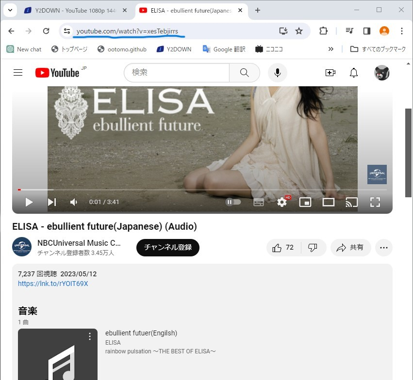
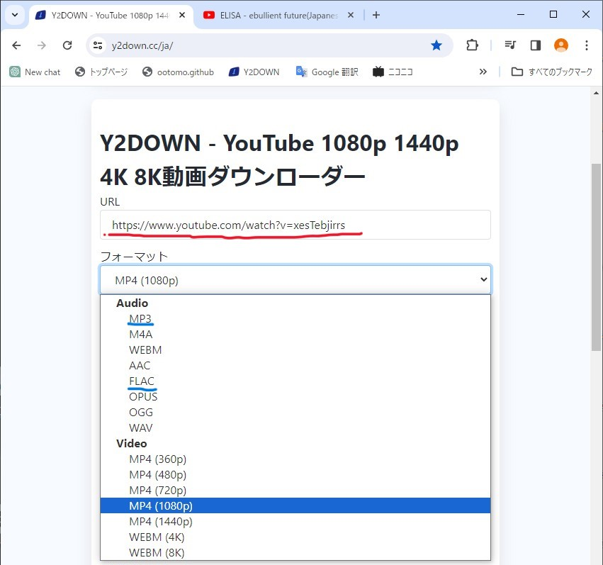
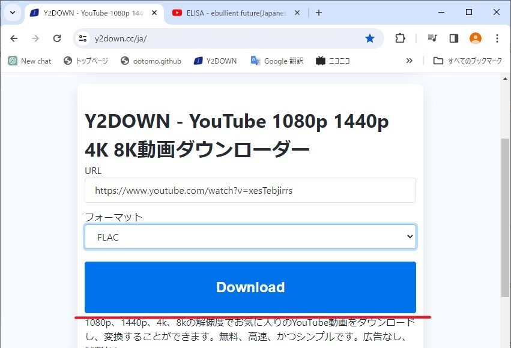
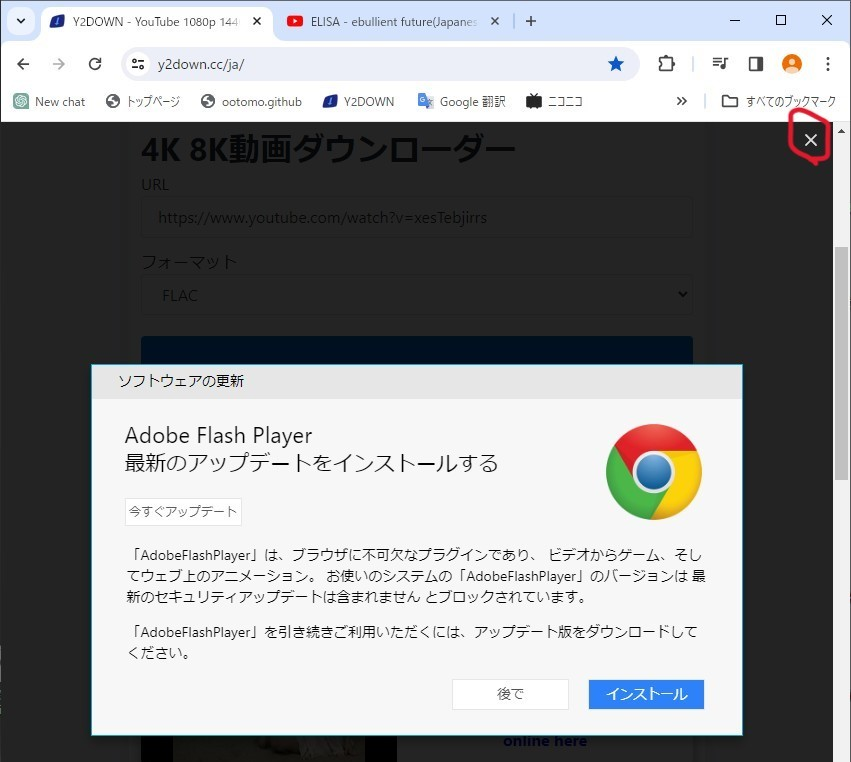
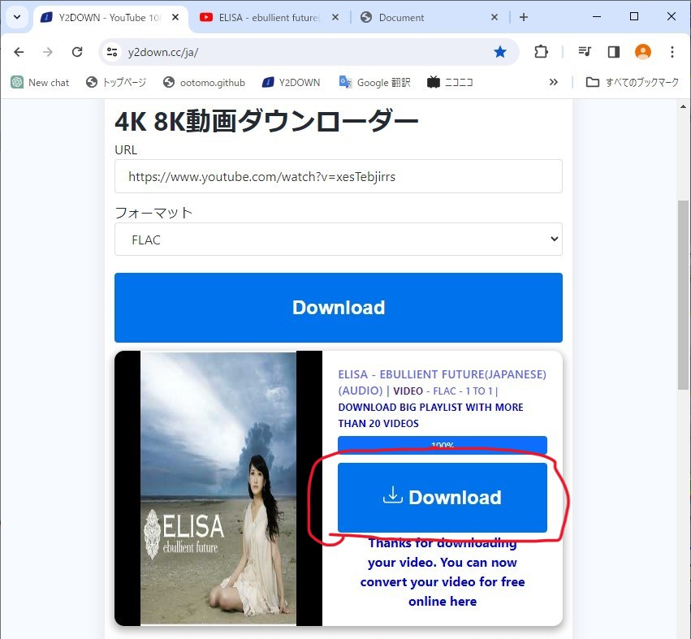
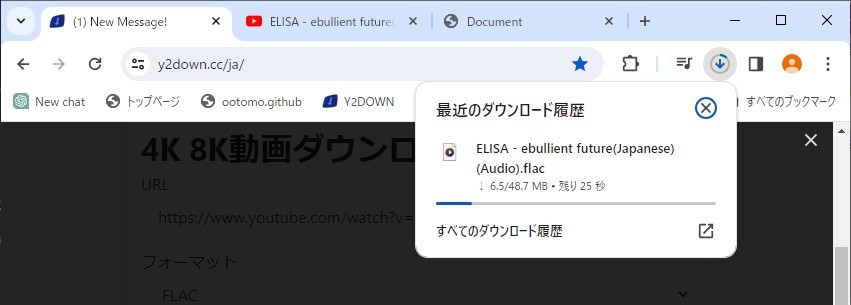

音源をYoutubeからダウンロードする都合上、できるだけ音質が綺麗なものが望ましい。
目的の音源が見つかったら青線のところのアドレスを丸ごとコピーしておく
リンク先に遷移するとこんな感じのページが出てくると思う
赤色で示したところにURLを貼り付ける。テキストボックスをクリックし、カーソルを出たのを確認してCtrl+Vで貼り付けることができる
その下にあるフォーマットから好みのフォーマットを選ぶ。
MP3が一般的なフォーマットなのでどのソフトでもCDに焼くことができる、個人的には音が綺麗なFLACがおすすめ。
しかしCDを焼くソフトウェアによっては対応していない場合がある。
フォーマットによっては動画にしてダウンロードすることができる
赤線で引いた青いDownloadボタンをクリックする。その最中に広告がかなりの量出てくるが、広告の閉じるボタンを押さずに画面上部のXマークを押すこと
変換が完了すると赤い丸で囲われた部分のダウンロードボタンが押せるようになる。その際別ページが勝手に開かれるがそのサイトは全く意味がないので閉じること
ダウンロードボタンを押すとダウンロードが始まるので画面右上に表示されるダウンロードが完了するまで待つ
ダウンロードが完了すると、ダウンロード先を変更していなければダウンロードフォルダに保存されている。
もしもダウンロード先のフォルダが分からなかった場合は、上記の画像にあるダウンロードアイコンを押して、ダウンロード履歴から全てのダウンロード履歴を選択し、フォルダを開くを選択してフォルダを確認できる。